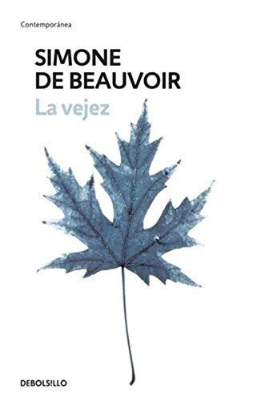

La vejezSimone de Beauvoir

La vejez
Simone de Beauvoir
Gran ensayo sobre cómo vive la vejez la persona y cómo la trata la sociedad.
- Publicado originalmente
- 1970
- Enfoque
- Ensayo
- Para quién
- Público general
- Ficha bibliográfica
- Open Library
Este libro tiene derechos de autor, así que no lo alojamos. Te dejamos la ficha para que sepas de qué trata y lo busques en una librería o biblioteca.